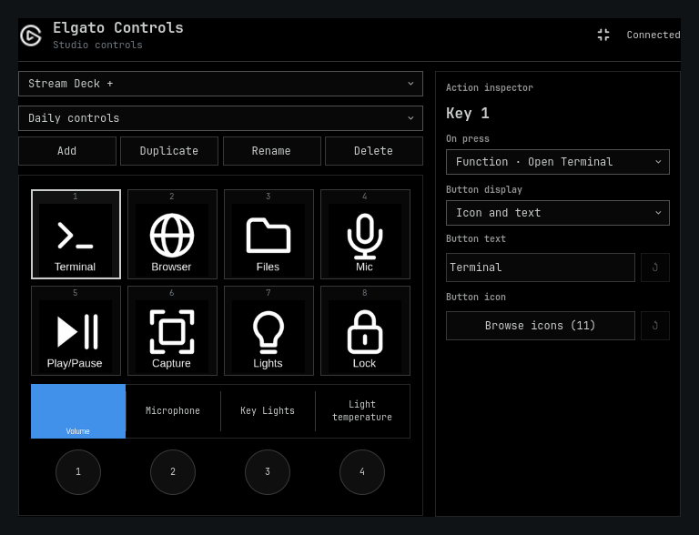
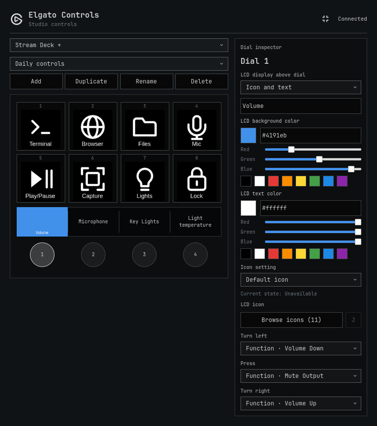
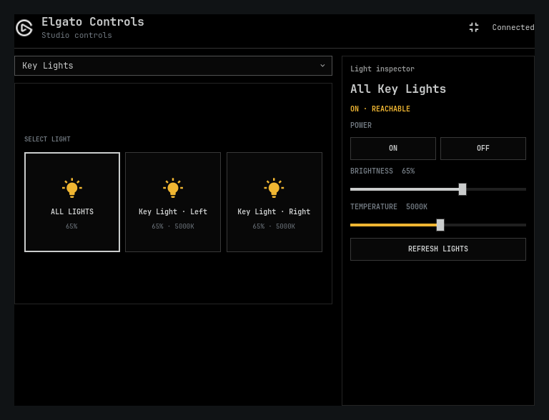

STREAM DECK
A shortcut to your kind of flow.
Launch apps, switch workspaces, control audio, and keep your everyday actions on a button. Build independent pages and nested folders for each device model.
Explore buttons & pages ↗
ELGATO CONTROLS FOR OMARCHY
Give your Elgato gear a home on Linux. Buttons, dials, and lights. All tuned to the way you work.
Open source. MIT licensed. Built for Omarchy Shell.
ILLUSTRATED SETUP / MAKE IT YOUR OWN
01 / TAKE CONTROL
Keep your favorite actions within reach. Configure everything from the Elgato icon in your Omarchy bar.
STREAM DECK
Launch apps, switch workspaces, control audio, and keep your everyday actions on a button. Build independent pages and nested folders for each device model.
Explore buttons & pages ↗
DIALS & DISPLAYS
Adjust volume, microphone levels, and lighting. Customize the LCD artwork above each dial with icons, text, and colors.
Explore dial controls ↗
KEY LIGHTS
Control network Elgato Key Lights from your desktop. Adjust brightness and temperature, or bring your lights together with grouped actions.
Explore light controls ↗
02 / BUILT TO BE YOURS
Your desktop has a personality.
Your controls should, too.
Bring your own icons, captions, and colors. Give toggles a different icon for each action state.
Add user-installed action packs with their own commands, icons, and dependency checks.
Configure an offline device preview before connecting your hardware. Your profiles and custom assets stay yours.
03 / LET’S GET CONNECTED
Start with Omarchy Quattro, Omarchy Shell, and the omarchy plugin commands. Then install and enable:
omarchy plugin add https://github.com/dxun-dev/omarchy-elgato.git --enableChoose where to place the widget. On first enable, accept the setup prompt for any missing packages and USB access, then open the Elgato icon to configure your devices.